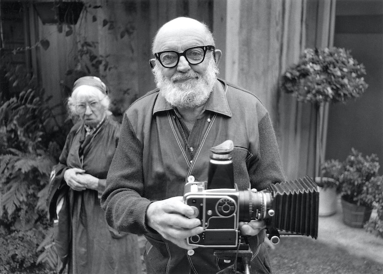

MY WEBSITE
PHOTOGRAPHY
Ansel Adams
Ansel Easton Adams (February 20, 1902 – April 22, 1984) was an American landscape photographer and environmentalist known for his black-and-white images of the American West. He helped found Group f/64, an association of photographers advocating "pure" photography which favored sharp focus and the use of the full tonal range of a photograph. He and Fred Archer developed an exacting system of image-making called the Zone System, a method of achieving a desired final print through a deeply technical understanding of how tonal range is recorded and developed during exposure, negative development, and printing. The resulting clarity and depth of such images characterized his photography.
